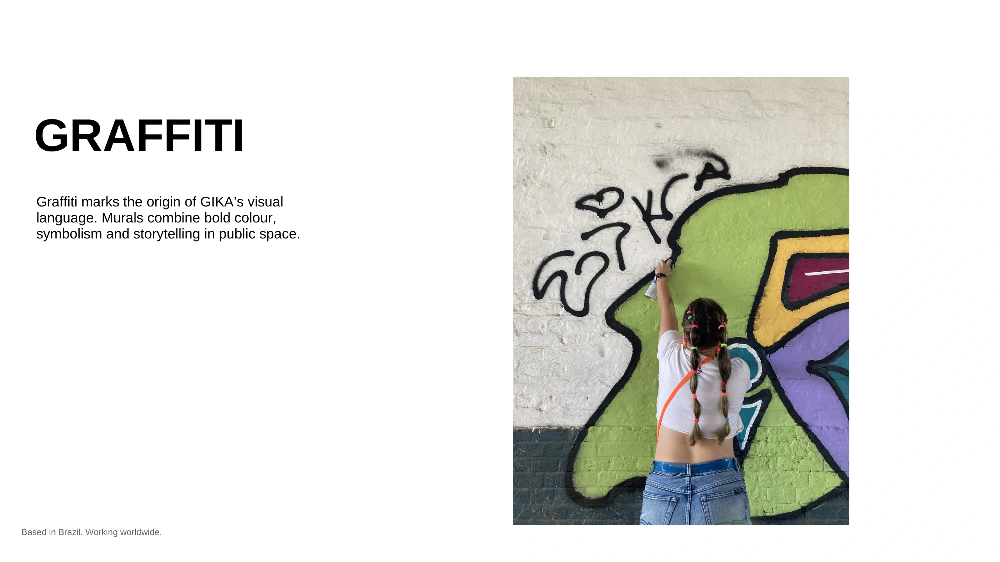
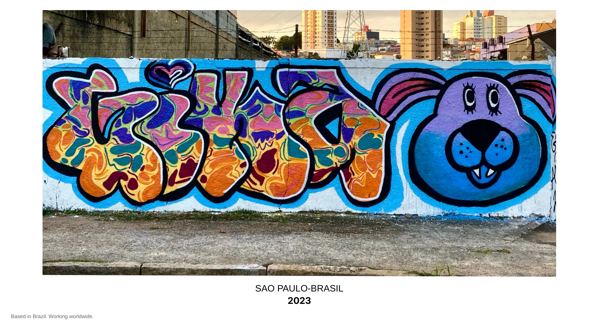
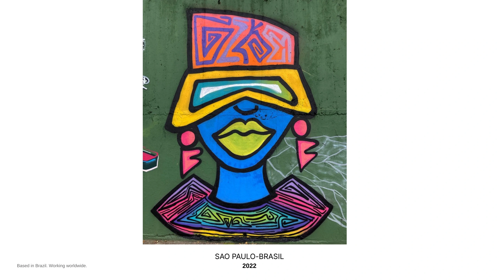
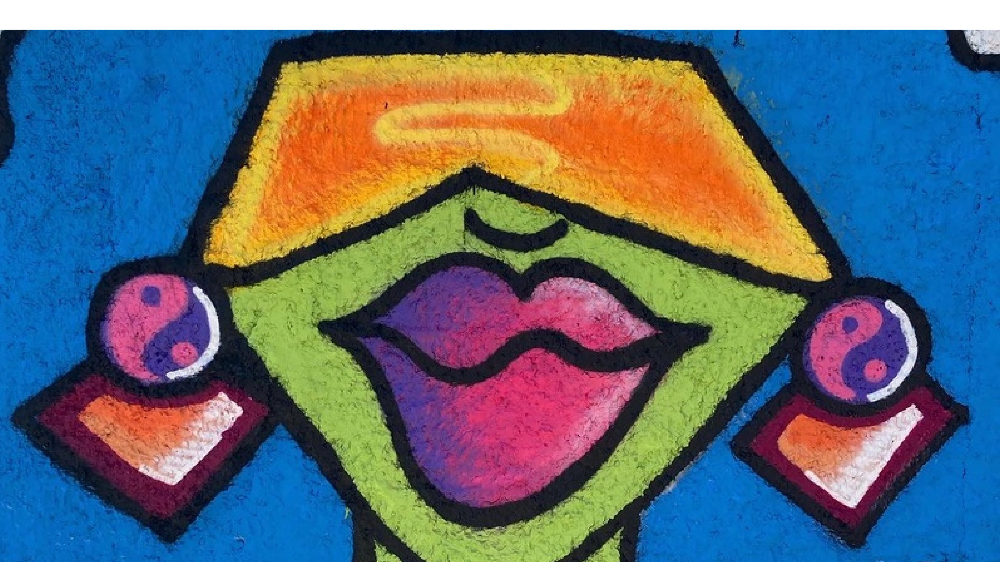

GRAFFITI
O graffiti marca a origem da linguagem visual de GIKA. Seus murais combinam cores fortes, simbolismo e narrativa no espaço público.




O graffiti marca a origem da linguagem visual de GIKA. Seus murais combinam cores fortes, simbolismo e narrativa no espaço público.



